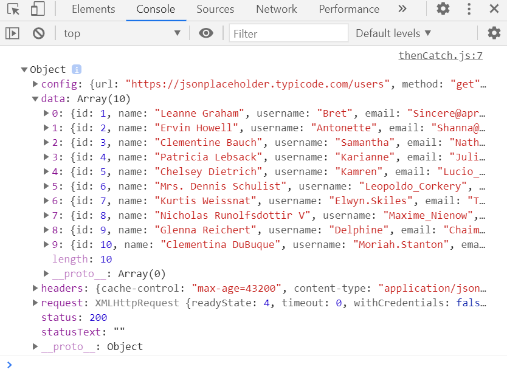

Una API web es un servidor web que expone urls para que sean visitadas, y den como resultado un conjunto de datos de acuerdo a las especificaciones de la API. Para visitar estas páginas desde javascript vamos a usar axios y la sintaxis async/await.
La ejecución usual de un programa se realiza instrucción por instrucción, de manera que se espera a obtener la respuesta de la instrucción anterior para ejecutar la siguiente. Esto se llama ejecución síncrona.
El problema con este tipo de ejecución surge principalmente cuando hay una instrucción que tarda mucho más que las otras, por ejemplo descargar un archivo de un servidor, o leer un archivo desde el disco duro. Esas instrucciones bloquean la ejecución de otras que no necesariamente dependen de su resultado.
Un ejemplo de esto puede ser por ejemplo una videollamada que tambien permita chatear. Si por alguna razón la transmisión de video se bloqueara, y la aplicación esperara a obtener una respuesta, se bloquearía tambien el chat y el resto de la aplicación. Esta no sería una buena experiencia dado que se espera que las dos cosas funcionen independientemente.
La solución a este problema es la ejecución asíncrona de instrucciones, la cual consiste en hacer la solicitud, y NO esperar la respuesta. En cambio el programa continúa su ejecución, y cuando la respuesta esté lista la recibe y procesa.

En el ámbito de llamados a URLs en JS, todas las llamadas se realizan de manera asíncrona. Vamos a usar una libreria llamada axios, la cual nos va a facilitar el trabajo.
Para hacer un llamado a una url vamos a usar el siguiente código:
axios.get('https://jsonplaceholder.typicode.com/users')
.then(function (response) {
// Esto se ejecuta al tener éxito con la solicitud
console.log(response); })
.catch(function (error) {
// Esto se ejecuta cuando hay un error con la solicitud
console.log(error); })
.then(function () {
// Esto se ejecuta siempre
});
Adicionalmente, en el archivo html que incluya este javascript, se debe incluir el archivo de axios con:
<script src="https://cdn.jsdelivr.net/npm/axios/dist/axios.min.js"></script>
Lo que se hace con el resultado obtenido dependerá de lo que se necesite. En este caso simplemente se está imprimiendo en la consola el resultado. Si es este momento va a la consola podrá ver el resultado. (Puede presionar F12 para abrirla)

En este caso el resultado contiene una propiedad llamada
data que contiene el nombre de usuarios, contraseñas y
correos que tienen el objetivo de ser usados como plantilla.
En el caso en el que no tengamos problema con esperar la respuesta de la URL podemos obligar a javascript a esperar por el resultado antes de ejecutar la siguiente instrucción. Esto tiene la ventaja de que no es necesario definir funciones para then, y para catch.
Para hacer esto vamos a usar las palabras de javascript async/await.
await se debe escribir justo antes de la instrucción que normalmente sería asíncrona. Pero para poder hacer esto se debe poner esta instrucción dentro de una función, y a ésta se le debe escribir async justo antes.
async function getData() {
try {
response = await axios.get(
"https://api.nasa.gov/planetary/apod?api_key=DEMO_KEY"
);
} catch (err) {
alert("Imposible obtener datos");
console.log(err);
return;
}
console.log(response);
}
but = document.querySelector("#buttonSol");
but.onclick = getData;
Adicionalmente para lidiar con los errores se puede encerrar este llamado a URL dentro de un bloque try...catch.
El resultado obtenido es un objeto JSON, que tiene la propiedad
data, la cual contiene información sobre la imagen del día en
astronomía.
Para hacer la solicitud esta vez lo haremos cuando se presione el siguiente botón. Si examinamos el resultado podemos ver una url a la imagen de día, ésta se puede usar directamente en esta página: